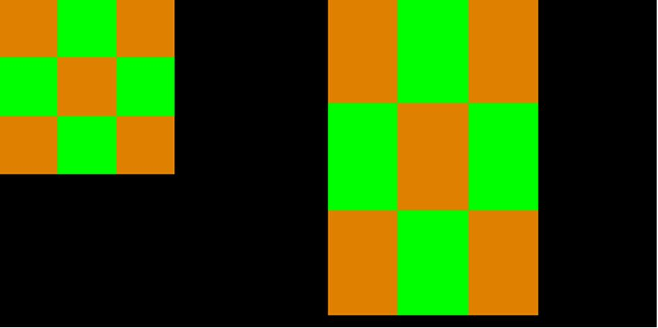

PPE
示例列表
本章介绍 PPE 示例的详细信息。RTL87x2G系列芯片为PPE外设提供以下示例。
功能概述
PPE(像素处理引擎)是为图像处理设计的，主要包括两个功能，缩放和混合。缩放功能可用于对源图像进行放大或缩小，并将结果图像传输到指定内存以进行进一步使用。而混合功能可用于将多张源图像混合在一起，并将结果存储到目标内存中。
源图片通过输入层读入PPE，结果图像通过结果层输出。所有输入层和结果层都支持多种像素颜色格式。
特性列表
支持放大/缩小功能。
支持最大4层的图像渲染混合。
支持多种颜色格式。
可配置的输入/输出存储地址。
支持从存储空间的输入或寄存器常量值的输入。
支持颜色键值过滤。
支持透明度遮罩。
缩放
PPE支持对输入图片的缩放功能，允许图片根据指定的比例进行放大或缩小。值得注意的是，PPE支持对X轴和Y轴的比例进行单独配置，以便分别调整宽度和高度。
缩放功能可以通过对API PPE_Scale() 的调用实现。例如下图所示：
{kind=link}

PPE缩放参考示例
渲染
PPE支持最多4层的图像渲染功能。PPE将它们混合在一起，并通过结果层将结果图像传输到目标内存地址。每个源图像都可以沿X或Y轴在正方向上进行平移。
PPE的渲染功能遵循以下公式：
渲染功能通过调用API PPE_Blend() 实现。下面是渲染示例：

PPE渲染参考示例
颜色键值
颜色键值赋值给每个输入层，并且与源图像的颜色格式相同。PPE将从RD FIFO读取的源像素与键颜色进行比较，如果源像素值（排除透明度通道）与键颜色相同，则将其替换为0。否则，它将保留其原始值。需要注意的是，透明度通道在进行数值比较时不会被考虑在内，但它仍然会在比较完成后被替换。
颜色键值通过在输入图片的描述中设置：ppe_buffer_t::color_key_en 和 ppe_buffer_t::color_key_value。
颜色格式
PPE支持多种颜色格式。下面的表格列出了支持的颜色格式：

支持的颜色格式
透明度遮罩
PPE支持使用透明度遮罩降低输入像素的透明度以待进一步处理。
源像素的透明度通过透明度遮罩进行修改，使用以下转换公式：
故障排除
错误处理
PPE对用户指定的存储空间进行直接操作。用户应该确保存储地址是有效的且未被其他应用占用，否则可能会导致内存损坏。
其他错误原因可以在 PPE_ERR 中找到。
See Also
相关 API Reference 请查看：